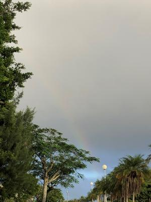
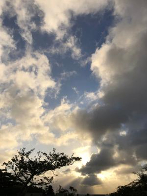
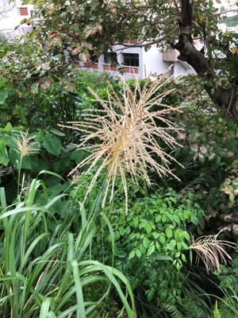
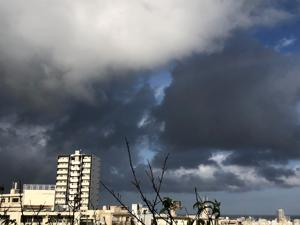

うるがいの話 ある日
最新: ルーチン【うるがいの話 ある日】とは 一日だけのプログです
『うるがいの話』の最新一日だけのプログで、通信料が少なく経済的だ。カニの画像をクリックすると全ての日付が載る『うるがいの話』サイトを表示します
|
|
【うるがいの話】 うるがい(ｳﾙｶﾞｲ urugai)とは、『もずくがに』の名前でとても大きくなります。 |
|---|---|
|
|
【カミマヤーの話】 猫のことを方言でマヤーといいます。カミマヤー（kamimayaa）とは、神の猫のことです。 |
|
【たながぁの音楽】 たながぁ（ﾀﾅｶﾞｰ tanagaa）とは手長えびのことで、何種類かあり大きいのは車 エビぐらいになります。 |

|
【ぶながぁの話】 ぶながぁ(ﾌﾞﾅｶﾞｰ bunagaa)とは、赤い髪の毛、赤い身体、そして身長は１ｍ２０ｃｍ ぐらい、川の蟹を食べているの目撃された。場所は沖縄県国頭郡大宜味村のと ある村僕の隣近所に住んでいる爺さんから、聞いた話です。 |
|
|
【ギーマの話】 ギーマ(giima)とは、山原の里山に咲くスズランに似た、 花を付けます。実は食べられます、 気が付くと口の周りが紫になっています。 |
2022年10月30日 (日）ルーチン
15:35
   
《「ルーティン」とも》１きまりきった手続きや手順、動作など。また、日常
の仕事。日課。
私のルーチンは、ジョギングである。走らないと気持ちが、悪いのである（走
るスピードは、だんだん遅くなっているが）。朝一にデジタル新聞の英訳され
たニュースがあると、英訳する習慣があった。ところがである、何かあったの
でしょう８月３０日を最後に、中国語だけが載るのある。ウーン、英文のリー
ディング能力が落ちていく、何とかしなければならないと思う。ヨメのお母さ
んの介護も、なるべくはルーチン化するように務めている。その効果もあって
お母さんも、介護に対する愚痴を上手くかわされるようになっている。デイケ
アがある日（週三回）は、朝、夕方、夜の３回、それ以外の日は昼を含み４回
のマンションとの往復をする。やっぱり、大変だ、お泊りは早々モタンと、止
めたが、介護するたび、いろいろなことに毒つくお母さんとの会話にヨメは疲
れ果ている。そして、ヨメと比較にはならないが、ヨメを送迎する私も疲れる
のである。昨日と今朝、虹を見る（１枚目と４枚目の写真、分かるかな・・・）
台風２２号は、コースが外れるようである、よかったぜ。
１５時２８分 ビットコインの総資産 ￥８、８９５↑